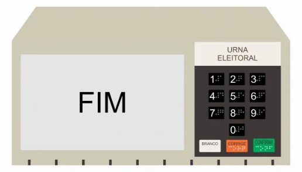

Destaques e Notícias

Sobre a plataforma
A confiança em um sistema eleitoral íntegro e seguro é o primeiro passo para que o eleitor(a) possa comparecer às urnas com tranquilidade e exercer a cidadania escolhendo seu candidato. E por isso a plataforma do TSE está a sua disposição, seja para entender como funciona o sistema eleitoral e aprender mais sobre a tecnologia utilizada nas urnas eletrônicas, ou para ficar informado com notícias confiáveis sobre as eleições.
Sistema eleitoral brasileiro
Os sistemas eleitorais têm como função a organização das eleições e a conversão de votos em mandatos políticos, visando proporcionar uma captação eficiente, segura e imparcial da vontade popular democraticamente manifestada, de forma que os mandatos eletivos sejam exercidos com legitimidade. Também é função dos sistemas eleitorais o estabelecimento dos meios para que os diversos grupos sociais sejam representados e as relações entre representantes e representados se fortaleçam.
Em uma forma de governo democrática como a existente no Brasil, o entendimento dos sistemas eleitorais é imprescindível. Porém, de acordo com Gomes (2011), eles são mutáveis, ou seja, variam no tempo e no espaço, e a forma que assumem em determinada sociedade decorre da atuação, da interação e dos conflitos travados entre as diversas forças político-sociais constituídas ao longo da história.
Sistemas Majoritário e Proporcional
Fonte: Unimed.org
O voto é:
Direto
Voto exercido diereta e pessoalmente
Secreto
Não indentificado
De igual valor
Cada voto possui o mesmo peso
Obrigatório
Todos devem votar (há exceções)
Universal
Exercido por todos os adequados
Para mais informações assista o vídeo:
As urnas eletrônicas
A urna eletrônica é o aparelho utilizado em nosso país para contabilizar os votos da população nas eleições. Por meio dele, a população brasileira escolhe os seus candidatos, e a apuração dos resultados é totalmente digital. A implantação desse sistema se deu ao longo das décadas de 1980 e 1990, com a progressiva informatização do sistema eleitoral brasileiro. Veja mais sobre "Urna eletrônica" em: Brasil Escola .
Agora assista este vídeo (entrevista do ex-secretário de tecnologia do TSE, Giuseppe Janino, ao canal UOL) para entender melhor sobre como funciona a segurança das urnas eletrônicas.
Indentificando Fake News
O combate à desinformação é prioritário para a Justiça Eleitoral. Criada em 2020 para ampliar o esclarecimento de informações relacionadas ao processo eleitoral, a página Fato ou Boato fomenta a circulação de conteúdos verídicos e estimula a verificação por meio da divulgação de notícias checadas, recomendações e conteúdos educativos.